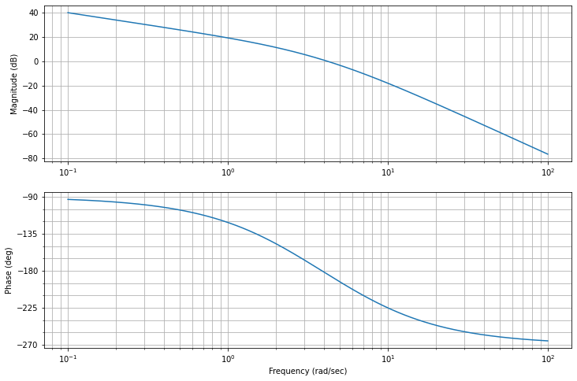
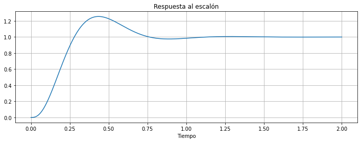
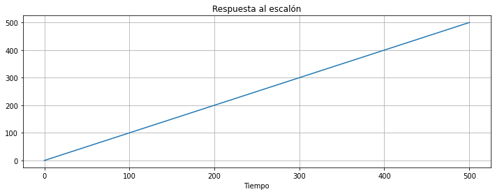

Problema con sistema de tipo 1¶
Para el sistema :
\[ G(s) = \frac{10}{s\left(\frac{s}{2.5}+1\right)\left(\frac{s}{6}+1\right)} \]
Se requiere un sistema que tenga un margen de fase de 45 grados y una constante de velocidad \(K_v=10\)
s=ctrl.tf('s')
G1=10/((s/2.5+1)*(s/6+1)*s)
Analizamos los polos del sistema a lazo abierto
G1.pole()
array([-6. , -2.5, 0. ])
ctrl.bode(G1, dB=True);
plt.gcf().set_size_inches(12,8)

_,pm,_,_,wp,_=ctrl.stability_margins(G1)
print(pm,wp)
-4.170645874604446 4.195274375474061
ctrl.dcgain(ctrl.minreal(G1*s)) # el minreal es para simplificar el pole en cero y pueda evaluarla
1 states have been removed from the model
10.0
phi_max=(45+10-pm)
print(f"El ángulo máximo a agregar es {phi_max}")
phi_max = phi_max*np.pi/180
alpha = (1-np.sin(phi_max))/(1+np.sin(phi_max))
print(f"Esto produce un esto pruduce una relación z/p de {alpha}")
El ángulo máximo a agregar es 59.170645874604446
Esto produce un esto pruduce una relación z/p de 0.07602235029343364
Probamos poniendo el el \(\omega_{max}\) en la frecuencia de corte.
wmax=wp
# phi_max=85
phi_max = phi_max*np.pi/180
alpha = (1-np.sin(phi_max))/(1+np.sin(phi_max))
alpha
0.9645913189500956
TD=1/(wmax*np.sqrt(alpha))
z=-1/TD
p=-1/(alpha*TD)
print(z, p)
-4.120330413615452 -4.271581479812823
Dc=ctrl.tf([-1/z,1],[-1/p,1])
ctrl.stability_margins(G1*Dc)
(0.8695227566999199,
-3.595557766909508,
0.05801531497067265,
3.9502117427292607,
4.232290647456006,
4.1873242354745175)
Vemos que esto no sirve por que la curva de fase se baja demasiado. Deberíamos rediseñar.
wmax=12
phi_max=60*(np.pi)/180
alpha = (1-np.sin(phi_max))/(1+np.sin(phi_max))
TD=1/(wmax*np.sqrt(alpha))
z=-1/TD
p=z/alpha
Dc=ctrl.tf([-1/z,1],[-1/p,1])
print(Dc.zero(), Dc.pole(), Dc.dcgain(), alpha)
[-3.21539031] [-44.78460969] 1.0 0.07179676972449085
ctrl.stability_margins(G1*Dc)
(5.635923781559606,
32.83177099437739,
0.4747149875778399,
15.283504622266324,
5.813363382362743,
7.019586651361185)
Vemos que no se puede llegar a los 45 grados de margen de fase con solo un compensador de adelanto.
Voy a probar con dos dejando el siguiente compensador:
wmax=9
phi_max=35*(np.pi)/180
alpha = (1-np.sin(phi_max))/(1+np.sin(phi_max))
TD=1/(wmax*np.sqrt(alpha))
z=1/TD
p=z/alpha
Dc1=ctrl.tf([1/z,1],[1/p,1])
print(Dc1.zero(), Dc1.pole(), Dc1.dcgain(), alpha)
[-4.68510345] [-17.28883914] 1.0 0.27099005412014443
Probamos con la misma idea:
wmax=10
phi_max=40*(np.pi)/180
alpha = (1-np.sin(phi_max))/(1+np.sin(phi_max))
TD=1/(wmax*np.sqrt(alpha))
z=1/TD
p=z/alpha
Dc2=ctrl.tf([1/z,1],[1/p,1])
print(Dc2.zero(), Dc2.pole(), Dc2.dcgain(), alpha)
[-4.66307658] [-21.44506921] 1.0 0.21744283205399909
ctrl.stability_margins(G1*Dc1*Dc2)
(5.11940378281518,
45.178384292325745,
0.5896895366180702,
18.358679652988574,
6.422352438438121,
9.477339127527927)
T=ctrl.feedback(G1*Dc1*Dc2)
t,y = ctrl.step_response(T, T=np.linspace(0,2,2401))
fig, ax = plt.subplots(figsize=(12, 4))
ax.plot(t,y)
ax.set_title('Respuesta al escalón')
ax.set_xlabel('Tiempo')
ax.grid()

T=ctrl.feedback(G1*Dc1*Dc2)
t,y = ctrl.step_response(T*ctrl.tf(1,[1,0]), T=np.linspace(0,500,2401))
fig, ax = plt.subplots(figsize=(12, 4))
ax.plot(t,y)
ax.set_title('Respuesta al escalón')
ax.set_xlabel('Tiempo')
ax.grid()

error = y[-1]-t[-1]
print(error)
-0.10000000026320777
(Dc1*Dc2).pole()
array([-21.44506921, -17.28883914])
(Dc1*Dc2).zero()
array([-4.68510345, -4.66307658])